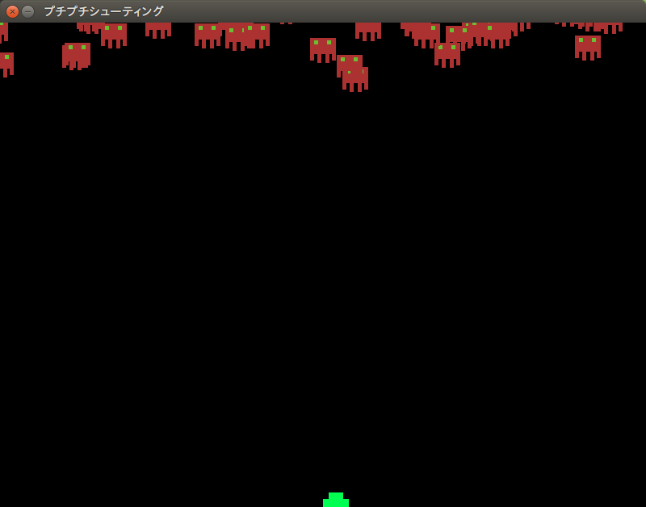

Pythonでゲームを作りますが、何か of Python3¶
目的¶
簡単なシューティングゲームを作って、Pythonに馴染んてもらう。
注釈
元ネタは Pythonでゲーム作りますが何か？ - 人工知能に関する断創録 です。
警告
この資料はPythonの基本文法をすっ飛ばしていますので、Pythonの基本文法に関しては、 Dive into Python3 もしくは Pythonチュートリアル （こちらのほうが詳しいです） をお読みいただけると幸いです。
またこのKataではコマンド操作を必要としますので、最低限以下のコマンド操作を伝授させてください。
- cd （ディレクトリ移動(Windowsでは引数なしの場合、現在ディレクトリのパス表示)）
- dir （現在ディレクトリの内容を表示）
- pwd （macOS, Linuxの場合の現在ディレクトリのパス表示）
- ls （macOS, Linuxの場合の現在ディレクトリの内容を表示）
ちなみに
伝授する際のコツは、書くキーワードがScratchなどの何に対応するのかを伝えながらだと、わかりやすいかもしれません。
用意するもの¶
- Python3 (Windows, Mac, Linux)
- Pygame
- Pythonのソースコードが編集できるエディタ（Atom推奨。PyCharmでも可）
- （できれば）ゲームに使う画像・音楽素材。
カリキュラム（？）¶
環境構築¶
Python3¶
- Python自体をインストールします。
Windows Mac
公式サイトから適切なインストーラーをダウンロード。Linux(Ubuntu 16.04)
以下コマンド実行。:
sudo pip3 install pygameもし何か問題があればエラーメッセージを見て解決してください。大抵「pip3が入っていない」、 「管理者権限で動かしていないためインストールできない」などが多いです。
コマンドプロンプト・もしくはターミナルで以下を実行してください。
Python 3.x.yと表示されたら成功です。:python -V python3 -V
やってみよう¶
では実際にゲームを作っていきましょう。
画面を表示する¶
1 2 3 4 5 6 7 8 9 10 11 12 13 14 15 16 17 18 19 20 21 | import pygame
from pygame.locals import *
import sys
SCREEN_SIZE = (800, 600) # スクリーンサイズ(px指定)
# Pygame初期化
pygame.init()
# SCREEN_SIZEの画面作成
screen = pygame.display.set_mode(SCREEN_SIZE)
# タイトルバーの文字列セット
pygame.display.set_caption("プチプチシューティング")
# ゲームイベントループ
while True:
screen.fill((0, 0, 255)) # 画面を真っ青で塗りつぶす。
pygame.display.update() # 画面を更新
# イベント処理
for event in pygame.event.get():
if event.type == QUIT: # 終了イベント
sys.exit()
|
このコードを書いたら、名前を game.py として保存し、コマンドでファイルの保存したディレクトリまで移動して、
python game.py と実行してみましょう。

この画面が出てきたら正解です。 しかし真っ青な画面は目が痛くなるので、真っ黒な画面にしましょう。
ヒント
- fill というのは「塗る」という意味です。
- コンピューターでは基本的に、赤・緑・青の光の三原色で色を記録します。
- 勇気のあるNinjaは、上のソースコードの以下の部分を消して実行してみよう！ しかし危険が伴うぞ！::
- for event in pygame.event.get():
- if event.type == QUIT: #終了イベント
- sys.exit()
危険
「ヒント」の一番最後は、プログラムを終了させなくする技なので、Mentorの皆様、および先輩Ninjaは 強制終了の方法を伝えておくこと。
注釈
- importってなんですか？
- ライブラリやモジュールというものを読み込んでいます。ライブラリというのは、簡単に言えば説明書です。 説明書を渡して、いまあなたが触っているPythonという言語が、画面を表示したりする方法を会得しています。 また、モジュールというのは、別のプログラムのことを言います。プログラムはバラバラに分解して作ることが できるんですよ。
スプライトを作る¶
それでは画面を真っ黒にできたら、画面に表示するキャラクターのスプライトを作りましょう。
注釈
スプライトという単語で反応したNinjaは、なかなかのScrach使いとみた。
といっても簡単で、素材ファイルがあれば以下の行を追加するだけです。
1 2 3 4 5 6 7 8 9 | # 背景透過が必要ないとき
pc_img = pygame.image.load("読み込みたいイメージファイル").convert()
# 背景透過が必要なとき
pc_img = pygame.image.load("読み込みたいイメージファイル").convert_alpha()
# 背景色を指定していても、背景が透明にならない場合について
pc_img = pygame.image.load("読み込みたいイメージファイル").convert()
colorkey = pc_img.get_at((0, 0)) #左上の色を透明色に
pc_img = set_colorkey(colorkey, RLEACCEL)
|
ここでは以下の素材を使いましょう。

それでは、 game.py を以下のように書き換えましょう。
1 2 3 4 5 6 7 8 9 10 11 12 13 14 15 16 17 18 19 20 21 22 23 24 25 26 27 28 29 30 31 32 33 34 35 36 37 38 39 40 41 42 43 44 45 46 47 48 49 50 51 | import pygame, math
from pygame.locals import *
import sys
SCR_RECT = Rect(0, 0, 800, 600) # スクリーンサイズ(px指定)
# キャラクターのスプライト（クラス）を作る
class CharacterSprite(pygame.sprite.Sprite):
def __init__(self, filename, x, y, vx, vy):
pygame.sprite.Sprite.__init__(self)
self.image = pygame.image.load(filename).convert_alpha()
width = self.image.get_width()
height = self.image.get_height()
self.rect = Rect(x, y, width, height)
self.vx = vx
self.vy = vy
def update(self):
# 画面からはみ出ないようにする
self.rect = self.rect.clamp(SCR_RECT)
def draw(self, screen):
screen.blit(self.image, self.rect)
if __name__ == '__main__':
pygame.init()
screen = pygame.display.set_mode(SCR_RECT.size)
pygame.display.set_caption("プチプチシューティング")
# スプライト作成
MyPC = CharacterSprite("pc_img.png", 400, 500, 100, 100)
# 画面の更新時間を管理するオブジェクト
fps = pygame.time.Clock()
# ゲームイベントループ
while True:
screen.fill((0, 0, 0))
fps.tick(60)
# スプライト更新
MyPC.update()
# スプライトを描画
MyPC.draw(screen)
pygame.display.update() # 画面を更新
# イベント処理
for event in pygame.event.get():
if event.type == QUIT: # 終了イベント
sys.exit()
|
難しいことは抜きにすると、class（クラス）というのはScratchでいうところの スプライト 、 プログラミンでいうところの 絵 です。 そしてdefという単語で始まっているのは メソッド と呼ばれるもので、これはScratchの ブロックを作る に近いです。
さて、実行するとこんな画面が出てくると思います。

「俺はこれから本気出す」 - プレイヤー・キャラクター、動く。¶
さて、せっかく出した画像なので、動かしたいですよね。できれば自分の思ったとおりに。
もちろんゲームなので、キーボードに反応して動いてくれないとつまらないですね。 ということでここからはそれを作っていきます。
同じく game.py を以下のように書き換えましょう。
1 2 3 4 5 6 7 8 9 10 11 12 13 14 15 16 17 18 19 20 21 22 23 24 25 26 27 28 29 30 31 32 33 34 35 36 37 38 39 40 41 42 43 44 45 46 47 48 49 50 51 52 53 54 55 56 57 58 59 60 61 62 63 64 65 66 67 68 | import pygame, math
from pygame.locals import *
import sys
SCR_RECT = Rect(0, 0, 800, 600) # スクリーンサイズ(px指定)
# キャラクターのスプライト（クラス）を作る
class CharacterSprite(pygame.sprite.Sprite):
def __init__(self, filename, x, y, vx, vy):
pygame.sprite.Sprite.__init__(self)
self.image = pygame.image.load(filename).convert_alpha()
width = self.image.get_width()
height = self.image.get_height()
self.rect = Rect(x, y, width, height)
self.vx = vx
self.vy = vy
def update(self):
# 画面からはみ出ないようにする
self.rect = self.rect.clamp(SCR_RECT)
def draw(self, screen):
screen.blit(self.image, self.rect)
# プレイヤーのスプライト（クラス）を作る
class PCSprite(CharacterSprite):
def move(self, press):
if press[K_LEFT]:
self.rect.move_ip(-self.vx, 0)
if press[K_RIGHT]:
self.rect.move_ip(self.vx, 0)
if press[K_UP]:
self.rect.move_ip(0, -self.vy)
if press[K_DOWN]:
self.rect.move_ip(0, self.vy)
if __name__ == '__main__':
pygame.init()
screen = pygame.display.set_mode(SCR_RECT.size)
pygame.display.set_caption("プチプチシューティング")
# スプライト作成
MyPC = PCSprite("pc_img.png", 400, 500, 100, 100)
# 画面の更新時間を管理するオブジェクト
fps = pygame.time.Clock()
# ゲームイベントループ
while True:
screen.fill((0, 0, 0))
fps.tick(60)
# スプライト更新
MyPC.update()
# スプライトを描画
MyPC.draw(screen)
pygame.display.update() # 画面を更新
# イベント処理
for event in pygame.event.get():
if event.type == QUIT: # 終了イベント
sys.exit()
if event.type == KEYDOWN:
if event.key == K_ESCAPE:
sys.exit()
pressed_keys = pygame.key.get_pressed()
MyPC.move(pressed_keys)
|
はい！ ここでまどろっこしい書き方がさらにまどろっこしくなった様に見えるけど、
PCSprite という新しいクラスを作りました。
PCSprite の後ろに (CharacterSprite) と書いていますね。これはそして、イベント処理のところにキーボードの情報を受け取るようにして、更に PCSprite を
ベースに作った MyPC の move メソッドに、どのキーボードが押されているかを
送っています。 送られたキーボードの情報は、 MyPC の move は PCSprite の
move と同じ動き（ただしデータは MyPCが持っているデータ ） をするので、キャラクターが動く
という仕組みです。
ちょっとむずかしかったかな。
注意
実はここまで書いておいて申し訳ないのですが、このコード、正しくないです。
なんでそんなコードを書いたかというと、簡単なPythonのイントロダクションも兼ねて筆者がまっさらなところから書きました。
またもうひとつ言い訳をしてしまうと、プログラミングというのは常に試行錯誤しながら作っていくものなので、 一直線で完成に近づくものではないことは、もう優秀なNinja諸君ならわかっているとは思う。
つまりこのコードも試行錯誤しながら書いては、資料としてまとめているのだ！
ということで次の章からガラリとコードが変わるので、ご容赦ください。
「こいつら、動くぞ？！」 - 敵を表示させて動かしてみる。¶
大半のゲームには何らかの課題が在ります。モンスターを倒したり宇宙人を侵入させないようにしたり。 ということで敵を出しましょう。
あっ！ 重要なことを忘れてた！ ゲームにはルールが必要です。 ということで今ここでこのゲームのルールを決めちゃいましょう！ いやー、危なかった。
- プレイヤーは画面下に向かって行く敵をひたすら倒す。
- 弾は真上にしか打てない
- 敵とプレイヤーキャラクターがぶつかったらゲームオーバー
- 敵を画面下から通してしまってもゲームオーバー
- 敵は気まぐれなので下方向に一直線に進まない
- 敵の倒して得点がもらえる
ということで、ここでは敵を動かすついでに、ぶつかった時の処理を書きましょう。
さてさて、ここでソースコードが大きく変わりますよ。 筆者も本気出すよ。
1 2 3 4 5 6 7 8 9 10 11 12 13 14 15 16 17 18 19 20 21 22 23 24 25 26 27 28 29 30 31 32 33 34 35 36 37 38 39 40 41 42 43 44 45 46 47 48 49 50 51 52 53 54 55 56 57 58 59 60 61 62 63 64 65 66 67 68 69 70 71 72 73 74 75 76 77 78 79 80 81 82 83 84 85 86 87 88 89 90 91 92 93 94 95 96 97 98 99 100 101 102 103 104 105 106 107 108 109 110 111 112 113 114 115 116 117 118 119 120 121 122 123 124 125 126 127 128 129 130 131 132 133 134 135 136 137 138 139 140 141 142 143 144 145 146 147 148 149 150 151 152 153 154 155 156 157 158 159 160 161 162 163 164 165 166 167 168 169 170 171 172 173 174 175 176 177 178 179 180 181 182 183 184 185 186 | import pygame, math
from pygame.locals import *
import random
import sys
import re
SCR_RECT = Rect(0, 0, 800, 600) # スクリーンサイズ(px指定)
class Game:
"""
ゲームの構成そのものをまとめたクラス
.. tip::
クラス化することで各メソッドで共通して使う変数にアクセスしやすくする。
"""
enemy_prob = 12 #敵の出現率
def __init__(self):
"""
各種読み込み.
"""
pygame.init()
screen = pygame.display.set_mode(SCR_RECT.size)
pygame.display.set_caption('プチプチシューティング')
# 素材のロード
self.load_images()
# ゲームオブジェクトを初期化
self.init_game()
# メインループ開始
clock = pygame.time.Clock()
while True:
clock.tick(60)
self.update()
self.draw(screen)
pygame.display.update()
self.key_handler()
def init_game(self):
"""
ゲームオブジェクトを初期化
"""
# スプライトグループを作成して登録
self.all_sprite = pygame.sprite.RenderUpdates()
self.pc = pygame.sprite.Group() # HACK: 違和感あるけど、プレイヤーキャラクターグループ
self.enemies = pygame.sprite.Group() # エネミーグループ
# デフォルトスプライトグループを登録
Player.containers = self.all_sprite, self.pc
Enemy.containers = self.all_sprite, self.enemies
# プレイヤーを作成
self.player = Player()
def update(self):
"""
情報の更新と敵の出現管理
"""
# 0からenemy_probまでの乱数を出して、0が出たらエネミー出現
# つまりこのクラスの変数enemy_probを大きくすると……
if not random.randrange(self.enemy_prob):
Enemy()
self.all_sprite.update()
self.collision_detection()
def draw(self, screen):
"""
描画
"""
screen.fill((0, 0, 0))
self.all_sprite.draw(screen)
def collision_detection(self):
"""
衝突判定
プレイヤーとエネミー、レーザーとエネミーの衝突判定を行う
"""
player_collided = pygame.sprite.groupcollide(self.enemies, self.pc, True, True)
for enemy in player_collided.keys():
# FIXME: 仮実装。ゲームオーバー画面を本当は出すよ。
pygame.quit()
sys.exit()
def load_images(self):
"""
各イメージの読み込み
"""
# スプライトの画像を登録
Player.image = load_image("pc_img.png")
Enemy.image = load_image("enemy_img.png")
def key_handler(self):
for event in pygame.event.get():
if event.type == QUIT:
pygame.quit()
sys.exit()
elif event.type == KEYDOWN:
if event.key == K_ESCAPE:
pygame.quit()
sys.exit()
class Player(pygame.sprite.Sprite):
"""
プレイヤークラス
"""
speed = 3 # 移動速度
def __init__(self):
pygame.sprite.Sprite.__init__(self, self.containers)
self.rect = self.image.get_rect()
self.rect.bottom = SCR_RECT.bottom #プレイヤーは画面の一番下からスタート
self.rect.left = 400
def update(self):
pressed_key = pygame.key.get_pressed()
if pressed_key[K_UP]:
self.rect.move_ip(0, -self.speed)
if pressed_key[K_RIGHT]:
self.rect.move_ip(self.speed, 0)
if pressed_key[K_DOWN]:
self.rect.move_ip(0, self.speed)
if pressed_key[K_LEFT]:
self.rect.move_ip(-self.speed, 0)
# 画面からはみ出さないようにする
self.rect = self.rect.clamp(SCR_RECT)
class Enemy(pygame.sprite.Sprite):
"""
エネミークラス
"""
speed = 3 # 移動速度
def __init__(self):
"""
初期化処理
.. note::
敵は上からランダムに出てきます。
"""
pygame.sprite.Sprite.__init__(self, self.containers)
self.rect = self.image.get_rect()
self.rect.left = random.randrange(SCR_RECT.width - self.rect.width)
self.rect.bottom = SCR_RECT.top
def update(self):
"""
更新処理
.. note::
ランダムで動き回ります。
"""
mov_vec = [(-self.speed, 0), (0, self.speed), (self.speed, 0), (0, -self.speed)] # 上, 右, 下, 左の順で指定。
self.rect.move_ip(random.choice(mov_vec))
def load_image(filename, colorkey=None):
"""
画像をロードする。
@param filename ファイル名（ディレクトリ含む）
@param colorkey 背景色 (デフォルト値 None)
@return pygame.surface.Surface
"""
# 画像ファイルがpngかgifか判定するための正規表現
filecase = re.compile(r'[a-zA-Z0-9_/]+\.png|[a-zA-Z0-9_/]+\.gif')
try:
image = pygame.image.load(filename)
except pygame.error as message:
print("Cannot load image: " + filename)
raise SystemExit from message
# 画像の拡張子によって処理を振り分け
is_match = filecase.match(filename)
if is_match:
image = image.convert_alpha()
else:
image = image.convert()
if colorkey is not None:
if colorkey is -1:
colorkey = image.get_at((0, 0))
image.set_colorkey(colorkey, RLEACCEL)
return image
if __name__ == '__main__':
Game()
|
激変したこのソースコード。
色々新しい要素が追加されたので説明していきますね。
43 44 45 46 47 48 49 | # スプライトグループを作成して登録
self.all_sprite = pygame.sprite.RenderUpdates()
self.pc = pygame.sprite.Group() # HACK: 違和感あるけど、プレイヤーキャラクターグループ
self.enemies = pygame.sprite.Group() # エネミーグループ
# デフォルトスプライトグループを登録
Player.containers = self.all_sprite, self.pc
Enemy.containers = self.all_sprite, self.enemies
|
当たり判定をするにはとてつもなく大切なのがこの pygame.sprite.Group() なんです。
これはゲームの中の色んなスプライトをひとまとめにして動かすのに便利なクラスなのです。
また、これを使って当たり判定を行うため、これがないことには「ぶつかったら」という処理が書けないと言っても
過言じゃないです。
注釈
きっとRectクラスとGroupの中に入っているスプライトのRectでも当たり判定ができるだろうけど、 そこまで頭が回らなかった。興味あるNinjaは調べてやってみて。
163 164 | # 画像ファイルがpngかgifか判定するための正規表現
filecase = re.compile(r'[a-zA-Z0-9_/]+\.png|[a-zA-Z0-9_/]+\.gif')
|
これ、気になった？ 筆者はそういうNinjaが好きだよ。（だけど興味が無くってもそれは普通だよ）
これは 正規表現（せいきひょうげん） という、文字列のフィルターだと思ってくれると良い。
この正規表現というやつは、はじめはものすごく難解な呪文に見えるけど、勉強すればするほど、とっても便利な代物さ。
詳しい解説は省くけど、これは見たらちょっとわかるかもしれない。 png か gif という文字が入る文字列を フィルタリングするんだ。このフィルタをどう使っているかというと……、
171 172 173 174 175 176 | # 画像の拡張子によって処理を振り分け
is_match = filecase.match(filename)
if is_match:
image = image.convert_alpha()
else:
image = image.convert()
|
こんな風に ファイル名にpngかgifが入っているファイル かどうか区別するために使っているんだ。
さて、説明はこれくらいにして、実際に実行してみるとどうなるのか見てみよう。
ぞろぞろやってくる敵さんが上から攻めて来たぞ!
正直なことを言うと、敵さんが画面下についてもゲームオーバーにならないけど、 君の操作するキャラクターが囲まれるのは時間の問題だ！
そして今の君には奴らに対抗する手段は、画面の中をうろうろするしかない！ これはやばい！
「これを使えっ！」 - プレイヤーキャラクター、レーザーを放つ。¶
注釈
次回予告
突如襲来してきた赤いもじゃもじゃした謎の生命体に囲まれた君は、 メンター TAKAHASHIから黄色い棒を渡された！

「それを放って奴らにあたったら倒すようにするんだ！」
果たして君はやってくる奴らにいつまで生き残れるか？ そしてやられると味気なく終わってしまうこのゲームに、タイトル画面と ゲームオーバー画面をつけることはできるか？
色々ゲームにする。 - タイトル画面・ゲームオーバー画面・得点表示¶
最後の大掃除 - ソースを綺麗に、分割しちゃうぞ！¶
あとがき¶
実はPythonでゲームを作ったのは今回が初めてです。 なので、最初のソースコードと最後に出来上がったソースコードが全く違うものになっていると思います。
でもそれでいいと思います。 そんな最初からいきなり綺麗なコードをかける人がいたら、それは設計者か神様です。
プログラミングは粘土遊びやスケッチに似ています。
意外かもしれませんが、書いては消してということを結構します。
自分の頭の中のイメージを実装するために、色んなことを調べて、そしてコードにしていく。
この楽しみを少しでも多くのNinjaに知っていただければ幸いです。